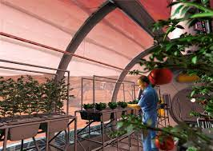

Agriculture
Chemical, physical, geological, and geographic attributes shape the environments on Mars. Isolated measurements of these factors may be insufficient to deem an environment habitable, but the sum of measurements can help predict locations with greater or lesser habitability potential. The two current ecological approaches for predicting the potential habitability of the Martian surface use 19 or 20 environmental factors, with an emphasis on water availability, temperature, the presence of nutrients, an energy source, and protection from solar ultraviolet and galactic cosmic radiation. Scientists do not know the minimum number of parameters for determination of habitability potential, but they are certain it is greater than one or two of the factors in the table below. Similarly, for each group of parameters, the habitability threshold for each is to be determined. Laboratory simulations show that whenever multiple lethal factors are combined, the survival rates plummet quickly. There are no full-Mars simulations published yet that include all of the biocidal factors combined. Furthermore, the possibility of Martian life having a far different biochemistry and habitability requirements than the terrestrial biosphere is an open question.
| Habitability factors | |
|---|---|
| Water |
|
| Chemical environment |
Nutrients:
Toxin abundances and lethality:
|
| Energy for Metabolism | Solar (surface and near-surface only)Geochemical (subsurface) |
| Conducive physical conditions |
|
The challenges of growing crops on Mars
The most obvious obstacle Earth crops face on Mars is that, well, it’s Mars. Our crops have evolved for our gravity,
atmospheric pressures, and levels of UV radiation. Earth plants need well-hydrated, bacteria-rich soil, regular sunshine,
and generally balmy temperatures.Meanwhile, Mars is an arid, frigid, lifeless, desert with only about half our level of
sunlight. It is also bombarded daily by higher levels of UV radiation, although how much radiation is not yet clear.Given
these detrimental factors, at first glance, it may seem easier to send food from Earth. But the inter-planetary shipping
costs alone are laughably prohibitive.
It costs about $10,000 just to send a can of Coke. Even if costs dropped dramatically, any re-supply issues or
delays could leave Martian settlers stranded and starving, not unlike the fictional Mark Watney.Fortunately Mars is
not completely without resources. Water is stored in the form of polar ice caps and at least one recently discovered
underground saline reservoir. Studies also show that plants are able to grow in Mars’ thin topsoil. But, because
this is Mars and nothing is easy, any future crops will need a lot more than water and dirt.Crops need habitats with
breathable air, radiation protection and steady temperatures and pressure to survive. But, of course, humans need all
of these things as well. Creating Earth-like conditions for both plants and humans would strain limited water and
energy reserves. It would be a poor settlement plan if we competed for resources with our own food supply.
Using synthetic biology to create Martian-adapted crops
So, reasoned Llorente, why not use synthetic biology to create crops better adapted to Martian conditions?
Plants could be engineered
to use less water, produce greater yields and have a higher tolerance to cold.
The very architecture of the plants could be altered.

Synthetic biology applied for enhancing plant performance. Different traits that can be engineered simultaneously to take full advantage of plants on Mars (and Earth). Credit: The Multiplanetary Future of Plant Synthetic Biology According to Llorente, the best way to test these ideas is in a bio-foundry that mimics Martian conditions. (Happily, the one thing we can’t simulate on Earth—Mars’ lower gravity—doesn’t seem to be an issue for plants. Research shows that plants are happy in little or even no gravity.) Llorente, along with Thomas C. Williams and Hugh D. Goold, detailed their bio-foundry proposal as well as potential crop alterations in an article forGenes, published earlier this year.One of the most innovative ideas Llorente shared at SynBioBeta 2018 was re-engineering how plants harvest energy.Earth plants have adapted to only use visible light. This presents an issue, given the low intensity of Martian sunlight. But with synthetic biology, plants could be altered to harvest UV photons for photosynthesis.This would be a major boon on multiple levels. Improved photosynthesis typically translates to higher crop yields. Even more importantly, plants would require less artificial lighting, giving human settlers a larger energy allowance. Engineering microorganisms to facilitate plant life on Mars. This conceptual microbe scavenges atmospheric hydrogen (H2) and carbon dioxide (CO2), and it is customized to condition Martian soil for plant growth by reducing soil perchlorate salts (MgClO4 and CaClO4) and increasing soil moisture. H2O: water; Cl-: chlorine; Ca2+: calcium; and Mg2+: magnesium. Credit: The Multiplanetary Future of Plant Synthetic Biology